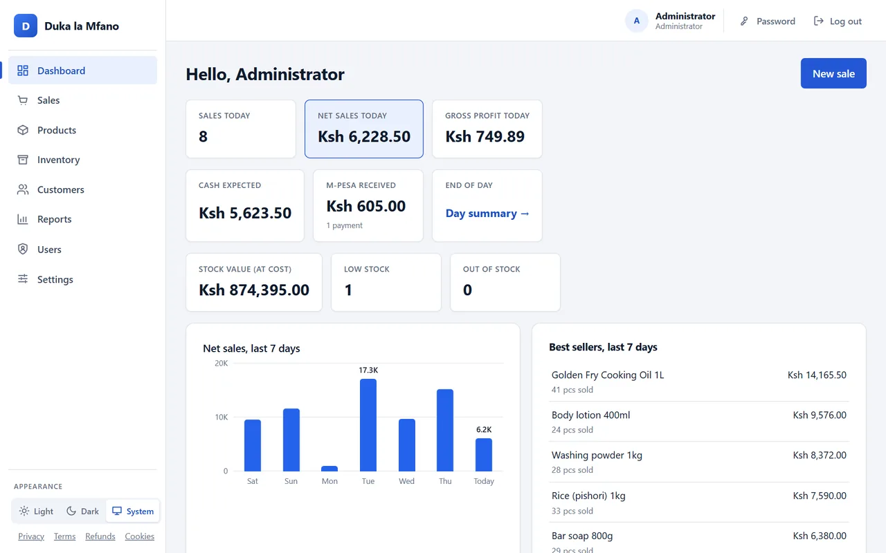
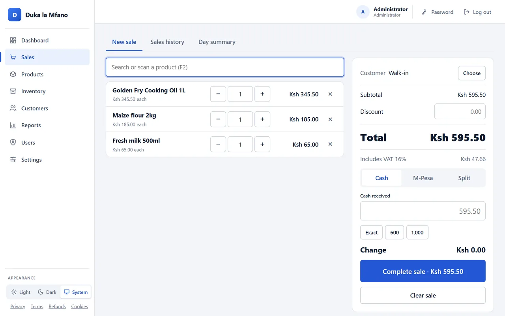
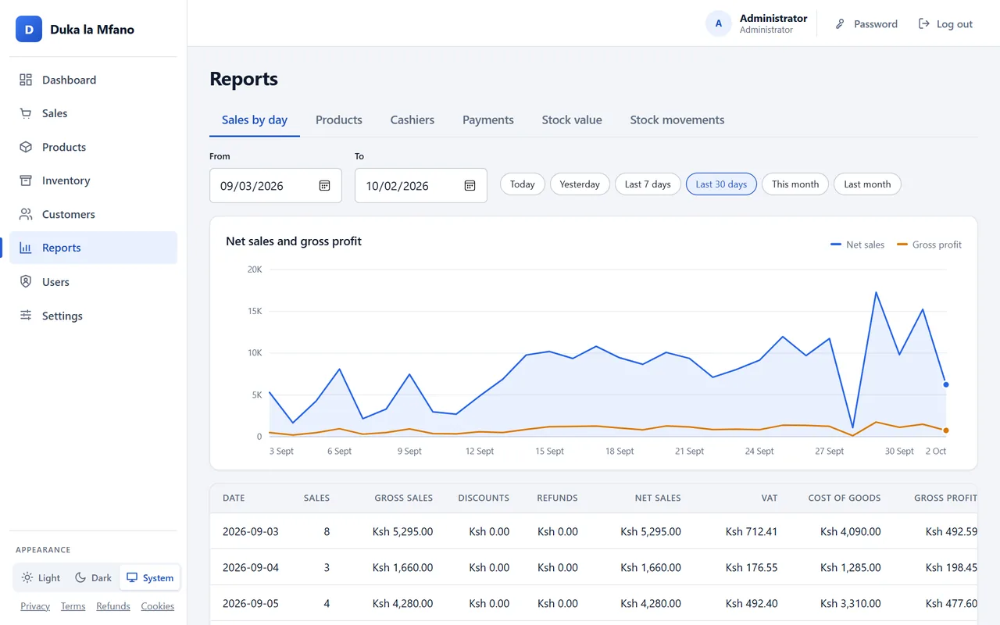
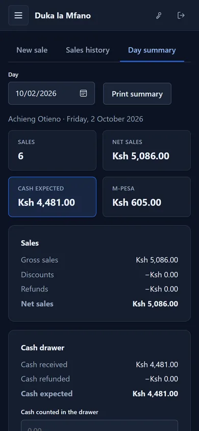

Point of sale for Kenyan shops
Sell with cash or M-Pesa, keep track of stock, and close the till with a printed day summary. It runs on your own computer, so it keeps selling when the internet is down.

Screenshots show the real software with sample data from a demonstration shop.
Everything a shop counter needs
Built around how Kenyan shops sell: shillings, 16% VAT, M-Pesa, loose goods by the kilo.
Fast till
Scan barcodes or search by name, sell by piece or by weight, split cash and M-Pesa, and see the change to give. Prints 80 mm receipts.
Stock that adds up
Record deliveries and corrections, get low-stock and out-of-stock warnings, and see the value of your stock at cost. Every change is logged.
Closing the till
A day summary for each cashier: cash expected against cash counted, and every M-Pesa code to tick off against your statement.
Reports
Sales by day, product, cashier and payment method, VAT per line, and gross profit, for any period.
Returns and refunds
Full or partial returns, with refunds worked out per item and stock put back. Only administrators can refund.
Staff roles
Administrator, cashier and inventory manager. Cashiers see only their own sales; every important action is recorded.
Customers
Optional, with the customer's agreement: find them by phone and print their KRA PIN on receipts.
Nightly backups
An automatic backup every night, checked after it is made, with an optional second copy on a USB drive or a cloud-synced folder.
Any device in the shop
Use extra tills, tablets or phones on the shop Wi-Fi with no installation on them. Light and dark mode.
See it in use



On a phone too. A cashier's day summary in dark mode: what was sold, the cash that should be in the drawer, and the M-Pesa payments to check.
How it works
One computer in the shop holds everything. Your data stays in your shop, not on our servers.
Install on one PC
A setup wizard installs the POS and its database on a Windows computer in the shop. About ten minutes.
Add products and staff
Enter your products, prices and opening stock, and give each cashier their own sign-in.
Sell from any till
The main PC and any phone, tablet or laptop on the shop Wi-Fi open the POS in a browser.
Close the day
Count the cash, check M-Pesa, print the day summary. Backups run on their own at night.
What you need
- One Windows 10 or 11 computer (64-bit), 4 GB of memory, 1 GB of free space.
- A Wi-Fi router, if you want more tills or phones.
- Optional: an 80 mm receipt printer and a USB barcode scanner.
- No internet is needed to sell.
What it does not do yet
- It does not send invoices to KRA eTIMS yet. If your business must issue eTIMS invoices, you still need another way to do that for now.
- M-Pesa payments are recorded by entering the M-Pesa code; they are not checked with Safaricom automatically.
- The main computer must run Windows.
Pricing
Every fee is listed here. There are no other charges, and no fee per sale.
| Licence for one shop | [licence fee] |
|---|---|
| Installation and setup | [installation fee or "included"] |
| Support and updates (optional) | [support fee per year, optional] |
Not working for your shop? Ask for a full refund of the licence within 14 days. Refund policy
Questions
Does it work without internet?
Yes. Everything runs on the shop's own computer and network, so sales, stock and receipts keep working when the internet is down.
Where is my data kept? Can you see it?
On your computer only. The POS sends nothing to us: no usage data, no analytics, no remote access. You decide where backups are copied.
Can I use phones as tills?
Yes, any phone or tablet with a browser on the shop Wi-Fi. Receipts print from the main computer's printer.
What if my computer breaks?
The POS makes a checked backup every night and can copy it to a USB drive or a cloud-synced folder. Keep one copy away from the shop.
Is it eTIMS compliant?
Not yet. It does not connect to KRA eTIMS today. We will say so clearly here when an eTIMS-certified version is available.
What happens if a cashier forgets their password?
They tap "Forgot password?" and the administrator sets a temporary one from their dashboard. Administrators have a recovery tool on the shop computer.
Ask for a demo
We will show you the POS with your own products, answer questions, and give you a written quote with every fee.
- Email: sales@example.com
- Phone: [support phone]
- [Your company name], [postal and physical address]